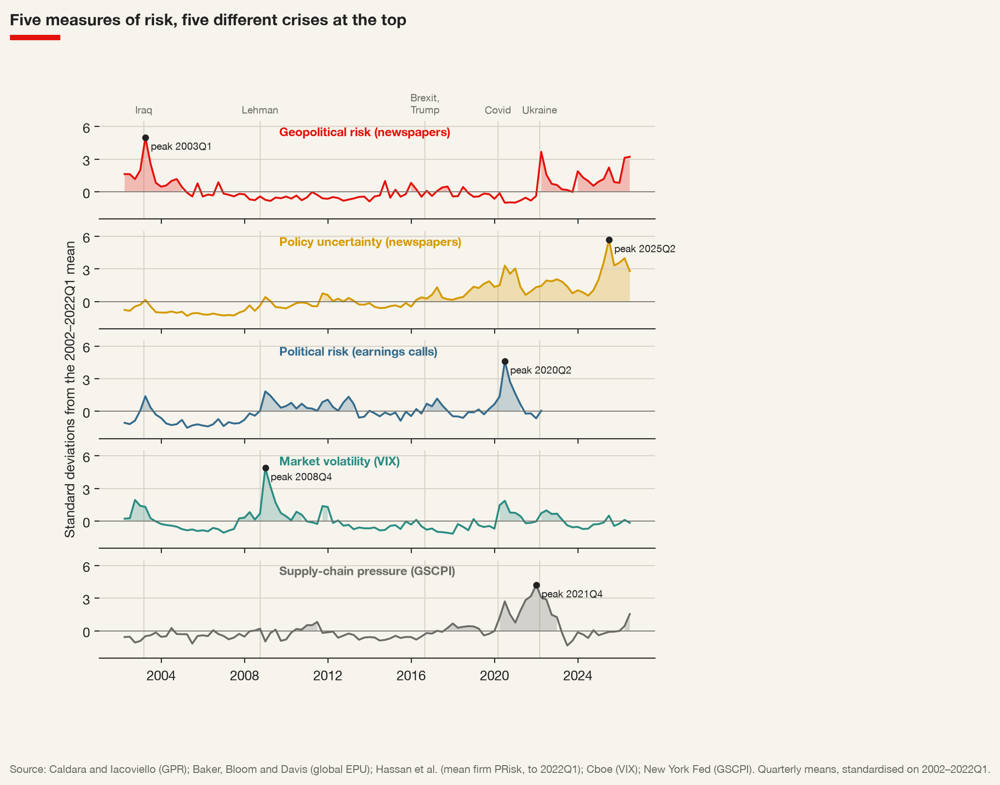
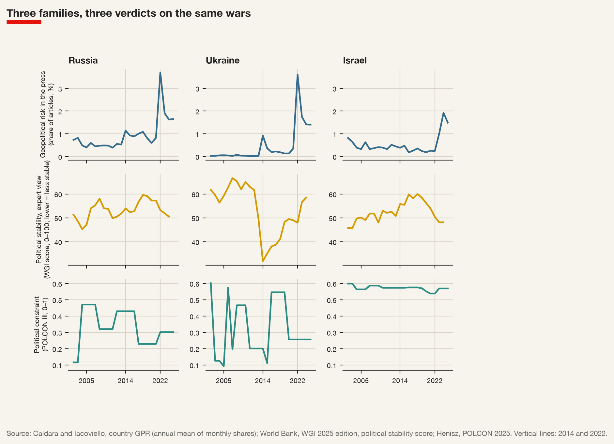
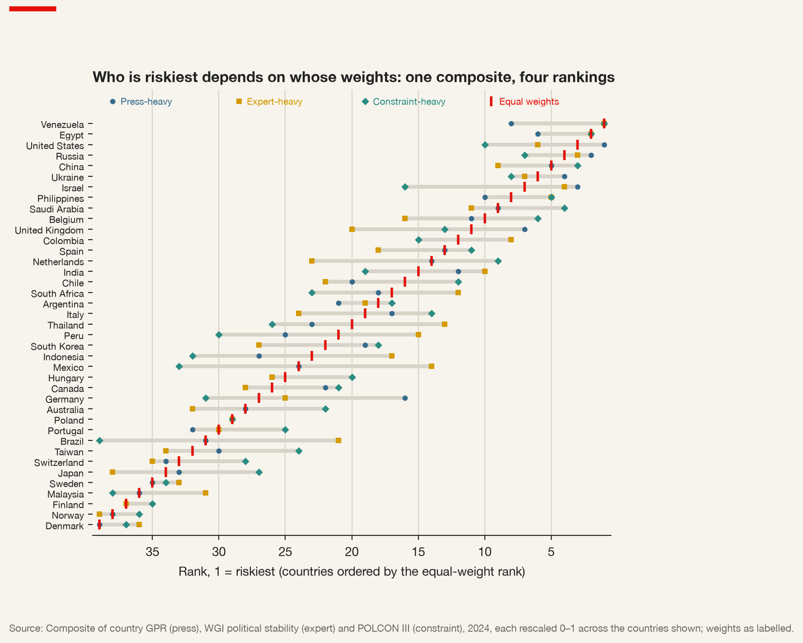

12 From Indicators to Decisions: What a Multinational Can Know About Geopolitical Risk
12.1 The question this book began with
This book opened with a question: how does a multinational firm know how much geopolitical risk it faces, and what should it do about it? Eleven chapters later the honest answer to the first half is that it never knows, in the sense of holding a number that settles the matter, and much of the book has been an account of why. The answer to the second half is more encouraging. A firm can organise what it does not know so that someone acts on it, at the right moment, for reasons that can be stated in advance and checked afterwards. That is what a risk function is for.
This concluding chapter draws the threads together. It takes two classic contributions — Stephen Kobrin’s review of political risk, published in 1979, and Witold Henisz’s measure of political constraint, published in 2000 — and uses them to frame what the preceding chapters established: that geopolitical risk is a contingency rather than an event; that it is measured through families of indicators that disagree; that every famous figure is a stack of decisions; that the system a firm operates in moves slowly and then suddenly; that the risk reaches the firm through identifiable channels, increasingly as the instrument or the collateral of state power; and that indicators decide nothing until someone attaches a threshold, a decision and an owner to them. It ends with the question with which any analyst should end: what would change your mind?
12.2 The event is not the risk
Frank Knight drew the distinction that every risk analyst still uses, even when they do not name it (Knight 1921). Risk, in his sense, is uncertainty that can be measured: the outcomes are known and their probabilities can be estimated from experience, so the uncertainty can be priced, insured or diversified. Uncertainty proper is the rest: situations unique enough, or new enough, that no frequency distribution exists. Most of what this book has called geopolitical risk is Knightian uncertainty in that sense. There is no actuarial table of invasions, no frequency distribution of secondary sanctions on a given country, no base rate for a constellation operator’s government ordering it to switch off a region. The indices examined in the preceding chapters are attempts to make the second kind of uncertainty behave a little more like the first — to give it a scale, a history and a comparison — and they do not entirely succeed.
Kobrin’s contribution, in a review written as the field of political risk assessment was taking shape, was to insist on a second distinction (Kobrin 1979). The literature he surveyed used “political risk” in two ways: some writers meant political events — instability, violence, changes of government — and others meant the effects of politics on business — expropriation, restrictions, changes in the rules. Kobrin argued that the first is not the risk. Political instability in a country is a property of that country; whether it affects a particular firm’s operations depends on the firm’s industry, its assets, its partners and its relationship with the government. A coup may leave a consumer-goods importer untouched and ruin a mining concession; a peaceful election may produce a government that rewrites the tax code for one sector. Risk lies in the contingency between the event and the firm.
Political risk (Kobrin) — not the political event itself, but the contingency that political events or conditions will affect a particular firm’s operations — its revenues, costs, assets and freedom to act. The same event carries different risks for different firms; a measure of the event is not a measure of the risk.
This book has widened Kobrin’s frame in one direction. His concern was largely with host-country risk: what the government of the country in which a firm invests might do to it. Geopolitical risk, as Chapter 1 defined it, includes the risk that originates outside the host country — in Washington, Beijing, Brussels or Moscow — and reaches the firm through its suppliers, customers, banks and networks. A sanction imposed by the firm’s home state on the country where it has a subsidiary, an export control on a component it buys, a jammer operating in a strait its ships use: none of these is a decision of the host government, and all of them reach the firm through the contingencies Kobrin described.
From the archive · Iran, 1979
Kobrin’s review appeared in the spring of 1979, in the first months of the revolution that ended the Shah’s rule in Iran. Few events have taught multinationals more about the gap between country analysis and firm risk. Iran had been a favoured destination for Western investment and contracting through the 1970s, rich with oil revenue and governed by a regime regarded as a firm ally of the United States. Its collapse cancelled contracts, stranded assets and exposed staff to danger within months.
The year ended with a second lesson. After the seizure of the US embassy in Tehran in November 1979, President Carter used the International Emergency Economic Powers Act — the statute on which most of the American sanctions programmes discussed in Chapter 10 still rest — to freeze Iranian government assets under US jurisdiction. Many American firms had claims against Iran. They obtained redress only through the Algiers Accords of January 1981, which ended the hostage crisis and created the Iran–United States Claims Tribunal in The Hague to arbitrate them. The firms were paid, eventually, out of the frozen assets: their risk had been settled by a negotiation between states in which they had no seat.
The episode is commonly cited as a reason so many firms built or expanded formal political risk units in the years that followed. Kobrin’s own study of how American firms organised political assessment appeared three years later (Kobrin 1982). The lesson both drew is the one this book has tried to establish: the analysis of a country is the beginning of the assessment of a firm’s risk, not the end.
Every serious assessment of geopolitical risk is therefore a claim about Kobrin’s contingency, and it starts from the firm’s footprint — where its revenue, assets, suppliers and people are. A risk report that begins with a map of the world coloured by a country index has not yet begun to assess the firm’s risk; one that begins with the firm’s own disclosures, and asks which of its countries, suppliers and channels the index bears on, has. The finding of Chapter 7, that most of the variation in political risk measured from earnings calls is specific to the firm rather than common to its country or sector (Hassan et al. 2019), is the quantitative form of the same point.
12.3 Six families that disagree
Chapter 1 sorted the indicators of geopolitical risk into six families, and the sorting has carried the book. Event-based indicators count things that happened, coded from reports: conflicts, cyber incidents, sanctions episodes. Text-based indicators measure how much the press or firms talk about a risk. Expert-based indicators are scores assigned by analysts or by surveys, such as the Worldwide Governance Indicators (Kaufmann, Kraay, and Mastruzzi 2011). Structural indicators describe slow-moving features of the system: the distribution of material capabilities, the pattern of trade dependence. Market-based indicators are prices that embed risk, such as sovereign credit-default swap spreads. Firm-level indicators capture risk as firms themselves perceive and disclose it.
Family of indicators — a set of measures of geopolitical risk that share a source of information and therefore a characteristic strength and blind spot: event-based (concrete, but only what was reported and coded), text-based (timely, but measures attention rather than exposure), expert-based (covers latent concepts, but opaque and sticky), structural (explains why, rarely when), market-based (forward-looking, but mixes risk with risk appetite), firm-level (speaks to the decision, but self-reported).
The most cited text-based measure is the one Chapter 1 took apart. Dario Caldara and Matteo Iacoviello count the share of articles in leading newspapers that mention geopolitical tensions, wars and terrorism, and show that their index rises with the events that history books record and that high values are followed by lower investment and employment (Caldara and Iacoviello 2022). Its sibling, the economic policy uncertainty index of Scott Baker, Nicholas Bloom and Steven Davis, applies the same logic to economic policy (Baker, Bloom, and Davis 2016). Chapter 7 went down to the level of the firm with the measure of Tarek Hassan and his colleagues, built from the share of conversation in firms’ earnings calls devoted to political topics and risk (Hassan et al. 2019). Each is ingenious, carefully validated and limited by its source: newspapers in a few countries and one language; earnings calls of listed firms, speaking to investors.
The families disagree, and the disagreement is information. When the text-based indices are calm and the market-based ones signal danger, someone with money at stake knows or fears something the press has not yet written about. When an expert rating stays unchanged through a crisis that the event data record in detail, the rating is sticky or the raters see a resilience the events do not. When a structural indicator shows a power transition under way and every short-run indicator is quiet, the structural one is saying why something may happen and the others are saying, correctly, that it has not happened yet. An assessment that relies on one family inherits that family’s blind spot. Triangulation across several families is not a matter of more being better; it is the only defence against a blind spot that cannot be seen from inside one family.
12.3.1 Five series, one quarter at a time
The claim can be tested with the series this book has used. Figure 12.1 sets five of them side by side, quarter by quarter, from 2002 to mid-2026: the geopolitical risk index built from newspapers (Caldara and Iacoviello 2022); the global index of economic policy uncertainty, also built from newspapers (Baker, Bloom, and Davis 2016); the average political risk that listed firms express in their earnings calls, available until the first quarter of 2022 (Hassan et al. 2019); the VIX, the volatility of the US stock market implied by option prices, the most watched market-based measure of fear (Whaley 2009); and the New York Fed’s index of global supply-chain pressure, which combines shipping and airfreight costs with the delivery times and backlogs reported in manufacturing surveys (Benigno et al. 2022). Each is expressed in standard deviations from its own mean over the 81 quarters that all five cover, so that their peaks can be compared.

Each series has a different worst quarter. For the geopolitical risk index it is the first quarter of 2003, the invasion of Iraq, followed by the first quarter of 2022. For policy uncertainty it is the second quarter of 2025, the quarter of the American tariff announcements. For the political risk firms discuss with their investors it is the second quarter of 2020, the pandemic. For the VIX it is the last quarter of 2008, the financial crisis. For supply-chain pressure it is the last quarter of 2021, when ports were congested and container rates at their height. Five measures of risk, five crises at the top.
The disagreement is sharper than a list of peaks suggests. Ranked against the other 80 quarters of the common period, the second quarter of 2020 is the riskiest for policy uncertainty and for firms’ political risk, the fourth for the VIX — and the least risky of all 81 for the geopolitical risk index, whose newspapers had stopped writing about war and terrorism to write about the virus. The last quarter of 2008 is the riskiest for the VIX and the third for firms, but the 71st for geopolitical risk and the 79th for supply-chain pressure, which collapsed with world trade. The first quarter of 2022, when Russia invaded Ukraine, is second for geopolitical risk and third for supply-chain pressure, but only 16th for the VIX and 34th for firms’ political risk: equity markets and earnings calls, dominated by American firms, treated a war in Europe as a smaller event than Lehman or the pandemic.
| Geopolitical risk | Policy uncertainty | Firms’ political risk | VIX | |
|---|---|---|---|---|
| Policy uncertainty (newspapers) | −0.19 | |||
| Political risk (earnings calls) | −0.19 | 0.72 | ||
| Market volatility (VIX) | 0.03 | 0.27 | 0.54 | |
| Supply-chain pressure (GSCPI) | −0.07 | 0.58 | 0.30 | 0.10 |
Table 12.1 puts the same point in numbers. Policy uncertainty and firms’ political risk move together closely (a correlation of 0.72), and both move with the VIX: they are, in different ways, measures of the uncertainty that matters to investors in listed firms. The geopolitical risk index is correlated with none of the other four — its correlations range from −0.19 to 0.03 — and supply-chain pressure is correlated with policy uncertainty, through the pandemic and the tariffs, but barely with markets. Changes tell the same story as levels: from one quarter to the next, the geopolitical risk index moves independently of policy uncertainty (a correlation of 0.00) and almost independently of everything else. A firm that watched only the VIX would have seen nothing unusual in the quarter Russia invaded Ukraine; one that watched only the geopolitical risk index would have seen nothing at all in the pandemic, which closed its plants and its customers’ shops.
None of this means that four of the five measures are wrong. They measure different things — attention to war, attention to policy, the concerns of managers, the price of insurance against a fall in equities, the strain on logistics — and each was right about its own object. It means that “geopolitical risk is high” is never a complete statement until one says which family says so, and that an indicator chosen because it rose in the last crisis is likely to miss the next.
12.4 Every figure is a stack of decisions
The method of this book rested on a claim: that a chart in a famous work is a set of decisions, and that the decisions become visible only when the chart is taken apart and rebuilt from its sources. Each chapter applied the claim to one figure, and each found the decisions where the claim said they would be.
A share of world output, in Chapter 2, depends on whether output is valued at market exchange rates or at purchasing-power parity, and the date at which the G7 ceased to dominate the world economy moves by decades with the choice. A share of world capabilities, in Chapter 3, depends on which components enter the index and how they are weighted, and the composite index of national material capabilities rewards population and heavy industry because it was designed for the wars of the nineteenth and twentieth centuries (Singer, Bremer, and Stuckey 1972). Trade “within” and “between” blocs, in Chapter 4, depends on where the line between blocs is drawn, which is itself an inference from voting in the UN General Assembly (Gopinath et al. 2024). A map of certified management systems, in Chapter 6, counts certificates, not performance. A count of cyber incidents, in Chapter 8, counts what was attributed, between states coded as rivals (Valeriano and Maness 2015). A count of sanctions cases per year, in Chapter 10, depends on how a case with no end is ended and how a case of several types is counted. A count of objects in orbit, in Chapter 11, depends on whether debris is dated by the event that created it or by the launch of its parent. None of these decisions is wrong. Each is defensible, and each is a choice someone made, usually for reasons stated in a codebook that few readers open.
The places where the data disagree with the published account are where the decisions become visible. Series are revised; countries are recoded; a release adds cases the original paper did not have; a variable’s meaning changes between the codebook and the distributed file. A reconstruction that matches the original perfectly is less informative than one that does not, if the difference is understood and explained. The analyst who notices and records the disagreement has learned something about the instrument that the analyst who merely reproduces the chart has not.
What each indicator cannot tell a firm. Read in sequence, the closing sections of the eleven preceding chapters form a list: attention is not exposure; a share is not a level; capabilities are not intentions; votes are not trade; a certificate is not performance; a composite is a choice of weights; an empty cell in an incident matrix is not safety; a correlation between embassies and exports is not a cause; a count of sanctions cases is not intensity; a catalogue of objects is not the environment. That list is the most useful thing a risk function can carry from the evidence reviewed in this book.
The same holds for any risk report a firm produces: it is an argument about the firm’s risk, assembled from decisions of exactly this kind. Which countries enter the footprint, and on what measure of exposure — revenue, assets, employees, suppliers? Which indicator stands for which risk, and from which release? How are missing values treated, and how are countries named so that sources can be joined? An analyst who cannot list the data decisions behind a number is asking the board to trust the picture rather than the reasoning.
12.5 The system moves slowly, then suddenly
Chapters 2 to 6 described the system in which multinationals operate: an international economic order resting on a distribution of power among states that have no government above them, partly governed by public institutions and partly by private authority. The structural indicators of those chapters — shares of world output, shares of material capabilities, the alignment of states in UN votes, voting power inside the institutions, the diffusion of standards — share a characteristic. They move slowly. A power transition takes decades; the reorganisation of trade into blocs shows up in data over years; the authority of an institution erodes before anyone announces its collapse.
Slow-moving indicators are easy to ignore, because nothing in them demands a decision this quarter. Yet slow structural change is released in sudden events: the system bends for years and then breaks in a week. The collective-security order of the League of Nations, whose failure over Ethiopia opened Chapter 10, looked intact until it was tested; the integration of Russia into European energy and financial markets looked like interdependence until February 2022 revealed it as exposure. The structural indicator does not tell the firm when. It tells the firm where the break, when it comes, will be most costly — where interdependence has become dependence, where a bloc boundary runs through its supply chain, where an institution it relies on has lost the support of the states that made it.
Two findings from the middle of the book make the point concrete. Chapter 5 argued that an institution is a risk mitigator when the coalition that sustains it is stable and a risk source when it is not: a guarantee, a co-financing agreement or an investment treaty is a promise by a coalition of states, and should be read as such. Chapter 6 showed that the rules a firm meets in its markets are increasingly written by private bodies and by large markets whose regulation travels — the Brussels effect (Bradford 2020) — so that a firm’s future requirements are visible in what its customers’ home markets adopt today. Both are slow variables. Both decide, when they shift, what a firm may sell, to whom, and on what terms.
This is why a sound assessment combines families. The structural indicators locate the fault lines; the event-based and text-based ones signal movement along them; the market-based ones show whether anyone with money at stake has noticed. None of them alone is a warning system. Together, with thresholds, they can be.
12.6 Structure as well as events: Henisz on constraint
Most of the indicators reviewed in this book measure what is happening: events, attention, prices, perceptions. Henisz’s measure of political constraint measures something different: how easily what is happening could change (Henisz 2000).
The idea comes from the theory of veto players, which George Tsebelis later developed into a general account of policy stability (Tsebelis 2002). A government that wants to change a policy — a tax, a regulation, a contract with a foreign investor — must secure the agreement of every actor with the power to block it: the executive, each chamber of the legislature, the courts, sub-national governments. The more such actors there are, and the more their preferences differ, the harder it is to change anything. Henisz built from this an index, POLCON, that combines the number of independent branches of government with veto power and the alignment of their partisan composition into a measure, between zero and one, of the feasibility of policy change. He found, across a large panel of countries, that greater political constraint was associated with higher economic growth (Henisz 2000), and in later work with more investment in infrastructure — the kind of long-lived, immobile asset most exposed to a government changing its mind (Henisz 2002).
Political constraint (POLCON) — a measure of the feasibility of policy change, built from the number of independent veto players in a political system and the alignment of their preferences. Low constraint means a government can change policy quickly, in either direction; high constraint means change is slow, which protects existing commitments and delays new ones.
The measure matters for the argument of this book in three ways. First, it is the structural complement to every event- and text-based indicator. An index of attention tells a firm that tension is rising; a measure of constraint tells it how fast that tension could become a change in the rules. Second, constraint cuts both ways, and a firm must ask which way it cuts for it. Low constraint means a government can expropriate quickly, but also that it can grant a licence, settle a dispute or lift a restriction quickly; high constraint protects an existing investment and slows the policy change a new entrant needs. Third, constraint connects the domestic politics of states to the weaponised interdependence of Chapter 8. The second condition for a network hub to become a chokepoint is that a state can direct the firms that run it (Farrell and Newman 2019). Whether a government can in practice order a bank, a cloud provider or a satellite operator to cut off a customer — quickly, without a court or a legislature stopping it — is a question about political constraint. The same measure that tells an investor how exposed it is to its host government tells a customer how exposed it is to its supplier’s.
The structural measure behaves very differently from the event and expert measures, and a firm reading them together must know why. Figure 12.2 follows three countries at war — Russia, Ukraine and Israel — on three indicators from three families: the share of articles in the geopolitical risk index’s newspapers that mention the country together with geopolitical risk, the World Bank’s expert-based score of political stability and absence of violence (Kaufmann, Kraay, and Mastruzzi 2011), and Henisz’s political constraint. The press reacted at once and by a large factor. Russia’s share of articles rose from 0.82 percent in 2021 to 3.69 percent in 2022 and Ukraine’s from 0.35 to 3.61; Israel’s quadrupled in 2023. The expert score moved less, and not always in the expected direction. Russia’s political stability score fell from 57.2 to 53.2 in the year of the invasion and to 50.5 by 2024 — about where it had been in 2013. Ukraine’s fell sharply in 2014, with the annexation of Crimea and the war in the Donbas, but in the years of full-scale war it rose, from 47.9 in 2022 to 58.5 in 2024, a reminder that the sources behind the score judge the state and its government, not only the fighting on its territory. Political constraint did not register the wars at all: Russia’s rose slightly in 2022, from 0.23 to 0.30; Israel’s has stayed between 0.54 and 0.60 for two decades.

None of the three is wrong. The press measures attention, and attention jumps. The expert score measures a latent property — the likelihood of political instability or violence — through surveys and ratings that update slowly and that judge a state at war on the cohesion of its government as well as on the fighting. The structural index measures the institutional feasibility of policy change, which a war need not alter. For a firm the useful reading combines them: the press says that something has happened, the expert score says how far informed observers have revised their view of the state, and the constraint index says how quickly the state could now change the rules the firm operates under.
The bargain between a firm and its host government also changes over time, in a direction that Raymond Vernon identified half a century ago and Chapter 9 examined (Vernon 1971). Before a multinational invests, the host government needs its capital, technology and market access, and the firm can extract favourable terms. Once the plant is built or the mine is sunk, the balance shifts: the firm’s assets are hostage, its technology has been transferred or copied, and the government can revise the terms with less to lose. The wave of expropriations of the 1960s and 1970s that Kobrin documented (Kobrin 1980) gave the obsolescing bargain its evidence, and the forced, discounted exits from Russia after 2022 gave it a geopolitical form: when the home state sanctions the host, the host loses its reason to keep the investor content. Constraint slows the obsolescence; it does not stop it. The exposure of assets and people is not fixed at the time of investment. It grows as the firm’s bargaining power declines, and the analysis that justified the investment must be redone as the bargain ages.
12.7 Instruments: where the risk meets the profit and loss account
Chapters 8 to 11 took four instruments through which geopolitical risk now reaches the firm most directly: cyber operations, economic diplomacy, sanctions and space. Read together, they share a pattern that the older political risk literature, focused on what host governments do to foreign investors, could not see. In each, the firm is not only the object of state action but part of its machinery. Firms run the networks that cyber operations traverse and the hubs that states weaponise. They are, in the two-level games of economic diplomacy (Putnam 1988), at once their home state’s clients, its instruments and, abroad, its hostages. They execute sanctions, and set their effective scope through their own compliance departments. They operate the constellations whose service a government can switch off. Geopolitical risk, in this sense, is increasingly risk that the firm carries on behalf of states — including its own.
Chapter 1 proposed five channels to trace how such a risk becomes a cost, and the instruments run through all of them. Market access is the firm’s ability to sell: closed by sanctions, export controls, licensing decisions, boycotts and the loss of a diplomatic relationship, opened by commercial diplomacy and trade agreements. Inputs are what the firm buys: components and raw materials whose supply is concentrated in one country, services — connectivity, timing, cloud computing — supplied by one operator under one state’s jurisdiction. Finance and payments are the plumbing: correspondent banks, payment networks, insurance, the currency of settlement — the channel through which financial sanctions and overcompliance operate. Assets and people are what the firm has in place: plants, mines, ships, inventories and employees exposed to expropriation, temporary management, conflict or interference. Data and operations are the systems the firm runs on: networks open to cyberattack, software and services that can be withdrawn, imagery and signals that can be denied.
Risk channel — the route by which a geopolitical development reaches a firm’s revenues, costs, assets or ability to operate: market access, inputs, finance and payments, assets and people, data and operations. Naming the channel converts a statement about the world into a statement about the firm, and points to the decision that could reduce the exposure.
The channels turn Kobrin’s contingency into something a firm can analyse. A statement that “tension between the United States and China is rising” is about the world. A statement that “a large share of our revenue is in a market exposed to bloc realignment, our key component comes from a single supplier in a country subject to export controls, and our payments in that market clear through banks that a financial sanction would cut off” is about the firm — and each clause points to a decision.
The instruments also share an evidentiary problem. The most consequential uses of state power against firms are the least likely to appear in the data. A sanction that works at the threat stage is never imposed (Drezner 2003); a cyber operation never attributed is never coded; a jammed navigation signal leaves no trace in a catalogue of objects in orbit; a firm quietly told by its home government not to bid for a contract appears in no dataset at all. The datasets on which this book has relied are records of the coercion that failed to deter or that was made public. A firm that reads them as the full distribution of what states do will underestimate the risk it carries.
12.7.1 When risks compound
Indicators are built one at a time, and risk reports display them side by side, which invites the reader to add them up. Risks do not add. They interact.
They compound when one risk removes the remedy for another. A firm that depends on a single supplier in a country that is drifting out of its home state’s bloc faces an input risk and an alignment risk; if the same country is a plausible target of sanctions, the sanction would cut the input at the moment the alignment drift made a replacement supplier in a friendly country most expensive. A firm whose ships depend on one satellite constellation faces a dependence risk; if the operator’s state is a sender of sanctions against a country whose waters the ships cross, the dependence becomes an exposure to a foreign-policy decision. They offset when one exposure hedges another: a firm with plants on both sides of a bloc boundary loses one market in a rupture but may keep the other, and a firm whose suppliers are spread across states with different alignments can shift sourcing as the boundary moves.
Interactions are where the analyst’s knowledge of the firm, rather than of the world, does the work. No index can be built for them in advance. They are also where the most expensive surprises lie, because a risk function organised by risk type — cyber, sanctions, country risk — has no one whose job is to see them.
12.8 The composite index, and who chooses the weights
Most practical risk scores, commercial or internal, are composites: select indicators, normalise them to a common scale, weight them, and aggregate. The handbook examined in Chapter 7 sets out each step and the choices it involves (OECD and European Commission Joint Research Centre 2008).
Composite index — a single measure built by combining several indicators after normalisation and weighting. Its ranking of units depends on which indicators are chosen, how they are normalised and how they are weighted — and the weights are not technical parameters but statements of what matters, and how much.
The composite is the least neutral number in any risk report. Normalisation decides whether a country’s score is relative to the best and worst in the sample or to a fixed benchmark, and therefore whether adding a country changes everyone else’s score. Weighting decides how much a conflict risk counts against a sanctions risk or a dependence risk, and no data can settle that, because the answer depends on the firm’s exposure through each channel and on how much loss of each kind it can bear. Equal weights are a choice too: the choice to treat every indicator as equally important, which is rarely what anyone believes.
The remedy is not to abandon composites but to expose their weights. A ranking that does not change when the weights move within a plausible range is robust, and a board can rely on it. A ranking that reverses when the weight on one indicator moves from a third to a half is telling the board that the decision depends on a judgement about priorities, not on the data — and that judgement belongs to the board, not to the analyst. Showing the sensitivity is not a confession of weakness. It is the analyst handing the decision to the person who must own it.
Figure 12.3 shows how much the weights matter with three indicators already discussed: the press-based country geopolitical risk index, the expert-based political stability score and the structural political constraint index, for the 39 countries covered by all three in 2024. Each is rescaled from 0 to 1 across these countries, with 1 for the most risk — most press attention, least stability, least constraint — and combined with four sets of weights: equal, or 60 percent on one indicator and 20 on each of the others. Seven countries are among the ten riskiest whatever the weights: China, Egypt, the Philippines, Russia, Ukraine, the United States and Venezuela. Below them the ranking is fluid. The median country moves seven places between the most and least favourable weighting, and sixteen of the 39 move ten places or more.

| Country | Equal weights | Press-heavy | Expert-heavy | Constraint-heavy |
|---|---|---|---|---|
| Venezuela | 1 | 8 | 1 | 1 |
| United States | 3 | 1 | 6 | 10 |
| Russia | 4 | 2 | 3 | 7 |
| Israel | 7 | 3 | 4 | 16 |
| United Kingdom | 11 | 7 | 20 | 13 |
| Mexico | 24 | 24 | 14 | 33 |
| Germany | 27 | 16 | 25 | 31 |
| Brazil | 31 | 31 | 21 | 39 |
The table shows where the fluidity comes from, and it is not noise. The United States is the riskiest of the 39 countries when the press is given most weight, because the newspapers behind the index are American and British and write about American wars, alliances and threats more than about anyone else’s; it falls to tenth when constraint is given most weight, because the American system of checks and balances places it among the more constrained countries in the sample. Israel moves from third to sixteenth for the same reason. Brazil and Mexico, rarely mentioned in Anglo-American newspapers’ war coverage, rise sharply when the expert score dominates. Each weighting embodies a view of what geopolitical risk is — the attention of a particular press, the judgement of a particular set of experts, the institutional ease of changing the rules — and the ranking a board sees is that view, not the world.
12.9 Indicators do not decide
An indicator without a threshold and an owner is decoration. A risk report can display every indicator in this book, beautifully, and change nothing in the firm, because nothing in it tells anyone what to do or when.
Watchlist — a short list of indicators, each paired with a threshold that triggers a named decision and with the person who owns that decision. It converts monitoring into commitment: the decision is made in advance, conditionally, so that when the threshold is crossed the question is no longer whether to act but whether the threshold was right.
A watchlist has four parts, and each does work. The indicator must be one the firm can actually observe, at the frequency it needs, from a source whose version it has recorded. The threshold must be a number, set before the event, so that it cannot be rationalised away when the moment comes; it may be revised, but revising it should be a decision with a record. The decision must be specific — contract a second operator, cap new commitments in a market, pre-position inventory, start the approval process for a sale — not “monitor the situation” or “review our exposure”. And the owner must be a person with the authority to take the decision, because a threshold crossed without an owner is crossed in silence.
From the archive · Shell’s scenarios, 1972–1973
The most famous case for deciding in advance comes from the oil industry. In the early 1970s the planning group of Royal Dutch Shell, led by Pierre Wack, concluded that the forecasting methods on which the company based its investment decisions assumed a continuation of the conditions of the previous two decades — cheap oil, controlled by the companies — that the politics of the producing countries no longer guaranteed. Instead of a single forecast, the group produced scenarios, among them one in which producing governments took control of supply and prices rose sharply.
Wack’s later account emphasised that the scenarios at first changed little: managers read them as forecasts to accept or reject, not as alternative worlds whose signposts they should watch. The group’s work became effective only when it was recast to change how managers thought about their business, and to make them identify in advance what they would do in each world. When the producers’ embargo and the price rises of 1973 arrived, Shell’s managers had, in Wack’s telling, already thought through what such a world would require of them (Wack 1985).
The lesson is not that scenarios predict. It is that a risk analysis changes behaviour only when it is tied, in advance, to the signals that would reveal which world is arriving and to the decisions each world calls for. A scenario without signposts and a risk report without thresholds fail in the same way.
The most useful risk report is therefore not the one with the most indicators but the one that would make someone act on a given Monday.
12.9.1 Why firms wait, and when they should not
There is a rational reason firms delay decisions in the face of geopolitical risk, and a watchlist must be designed against it. Nicholas Bloom showed that a rise in uncertainty leads firms to pause investment and hiring: when the future is less predictable, the option to wait and see becomes more valuable, and the economy slows as many firms exercise it at once (Bloom 2009). Waiting is often right. But Chapters 10 and 11 described cases where waiting destroyed options rather than preserving them — the firms that delayed their exit from Russia until the target’s countermeasures had closed the door on a sale on their own terms; the firm with one connectivity provider that waits until the service is switched off to contract a second. The value of waiting depends on whether the options remain open while one waits. A good threshold is set at the point where they begin to close.
12.10 Where the risk function sits
A risk report is an instrument; a risk function is an organisation that uses one. The argument of this book implies three things about how it should be organised.
The first is that geopolitical risk assessment cannot live only in a central unit. Kobrin’s contingency is discovered in the firm’s operations — in procurement, which knows where the inputs come from; in treasury, which knows which banks clear the payments; in the information-security function, which knows which networks and providers the firm runs on; in the country managers, who know what the host government is likely to do. A central function can build the indicators and the method; the exposure must be mapped with the people who run the business, from the firm’s own records, before reaching for any index.
The second is that the function must report to people who can decide. Ian Bremmer and Preston Keat argued that the most damaging political risks are in the “fat tail” — rare, high-impact events that standard models underweight — and that firms need political knowledge integrated into strategic decisions, not appended to them (Bremmer and Keat 2009). A brief to the board that names a small number of risks, the channels through which they would reach the firm and what to do about each is that integration in its simplest form: a document addressed to the people who own the decisions, written so that they can act on it.
The third is that the function must keep a record. It must be able to say, a year later, which version of which dataset produced the number on which the firm acted, which decisions were taken in building it, and what the threshold was at the time. Without that record a firm cannot learn whether the number, the threshold or the decision was wrong, because it cannot reconstruct what it knew. A risk function that cannot reconstruct its own past judgements cannot improve them.
12.11 What would change your mind?
Of all the questions that can be asked of a risk assessment, the most revealing is the last: what would change your recommendation? It is the question that separates an assessment from an opinion.
An assessment that nothing could change is not an assessment. An analyst who recommends reducing exposure to a market should be able to say which indicator, moving by how much, would lead to the opposite recommendation — and should be able to say it before the indicator moves. This is the same discipline as the threshold, applied to the analyst rather than to the firm. It protects against the most common failure of risk analysis, which is not ignorance but commitment: the analyst who has argued for a view reads every new piece of evidence as confirmation, and the firm that has invested on a view finds reasons to stay.
The evidence on expert forecasting supports the discipline. Philip Tetlock’s long study of political forecasts found that experts’ predictions were, on average, barely better than simple baselines, and that the forecasters who did better were those who held their views provisionally, drew on many sources and revised when the evidence moved, rather than those who explained events through one big idea (Tetlock 2005). Geopolitical risk is a field that rewards the single big idea — the coming war, the end of globalisation, the inevitable transition — with attention. A risk function should reward the opposite habit.
Every chapter of this book ended by asking what a famous figure did not license a multinational to conclude. The same question, asked of a firm’s own analysis, tells a board how much weight to put on its recommendation, and tells the reader where to look for the next surprise.
12.12 A short review of the literature
The study of political risk in international business took shape in the 1970s, in the shadow of the wave of expropriations that Kobrin (1980) documented. Kobrin (1979) reviewed the early literature and argued that risk lies in the contingency between political events and a firm’s operations, not in the events themselves; Fitzpatrick (1983) surveyed the same field and found its definitions of risk equally unsettled; and Kobrin (1982) studied how firms actually organised the assessment. The distinction between measurable risk and unmeasurable uncertainty on which the field rests is Knight (1921)’s, and Vernon (1971) supplied the dynamic of the obsolescing bargain.
The institutional strand begins from veto players (Tsebelis 2002). Henisz (2000) turned the idea into the POLCON index of political constraint and related it to growth, and Henisz (2002) to investment in infrastructure, the kind of asset most exposed to policy reversal. The measurement strand is more recent and largely text-based: Baker, Bloom, and Davis (2016) on economic policy uncertainty, Caldara and Iacoviello (2022) on geopolitical risk, and Hassan et al. (2019) on political risk as firms themselves discuss it, alongside expert-based aggregates such as Kaufmann, Kraay, and Mastruzzi (2011), the market-based VIX (Whaley 2009) and composite measures of supply-chain strain such as Benigno et al. (2022) — series which, set side by side, peak in different crises and are barely correlated with one another. Bloom (2009) established the mechanism by which uncertainty, once measured, depresses investment, and OECD and European Commission Joint Research Centre (2008) codified the construction of the composite indicators on which most practical risk scores rely.
The geopolitical turn of the last decade reframed the field around networks and dependence: Farrell and Newman (2019) explain how states weaponise the hubs of global networks, which turns a firm’s suppliers and service providers into channels of state power, and Drezner (2003) shows why the coercion that works is the coercion least likely to be observed. On deciding under such uncertainty, Wack (1985) remains the classic account of scenarios tied to decisions, Bremmer and Keat (2009) the practitioner’s case for integrating political knowledge into strategy, and Tetlock (2005) the evidence on which habits of judgement forecast better.
12.13 Conclusion: decisions inside uncertainty
Geopolitical risk will never be known with the confidence of a price or the regularity of an actuarial table. The world in which multinationals now operate makes that truer, not less true. The order that allowed firms to treat geopolitics as background — a single dominant power, institutions that refereed disputes, networks that nobody used as weapons — has given way to one in which power is contested, institutions compete, standards and supply chains divide along political lines, and the infrastructure firms depend on, from payment systems to satellites, is an instrument of state policy. In that world the question a firm faces is not whether it is exposed but how, through which channels, and to whose decisions.
The evidence reviewed in this book does not answer that question for any particular firm, and it cannot. What it offers is a discipline for answering it. Begin with the firm, not the country. Use indicators from several families, and treat their disagreement as information. Know the decisions inside every number, and record where the data depart from the published account. Name the channel through which each risk would reach the firm. Watch the slow structural variables as well as the fast ones, because the slow ones say where the break will be costly. Attach to each indicator a threshold, a decision and an owner. And say in advance what would change your mind.
The analyst’s job is not to remove uncertainty but to make the decisions inside it visible — the decisions in the data, the decisions in the method, and the decisions the firm will take when a threshold is crossed — to the person who must act. An assessment that does that has done what an assessment can. One that does not, however rich its indicators, is only a picture of the world.